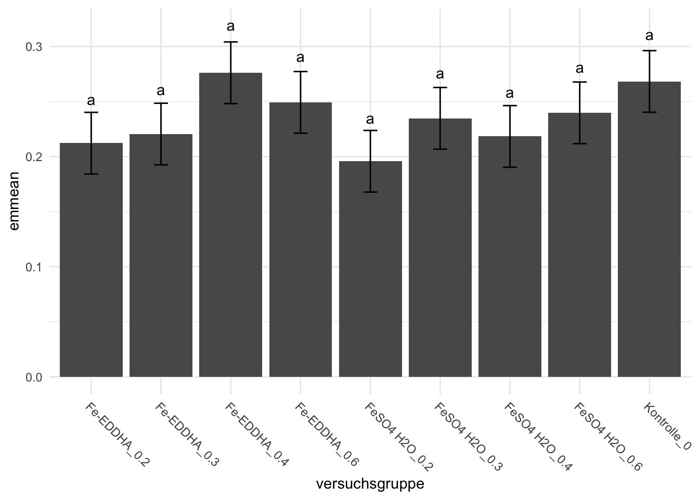
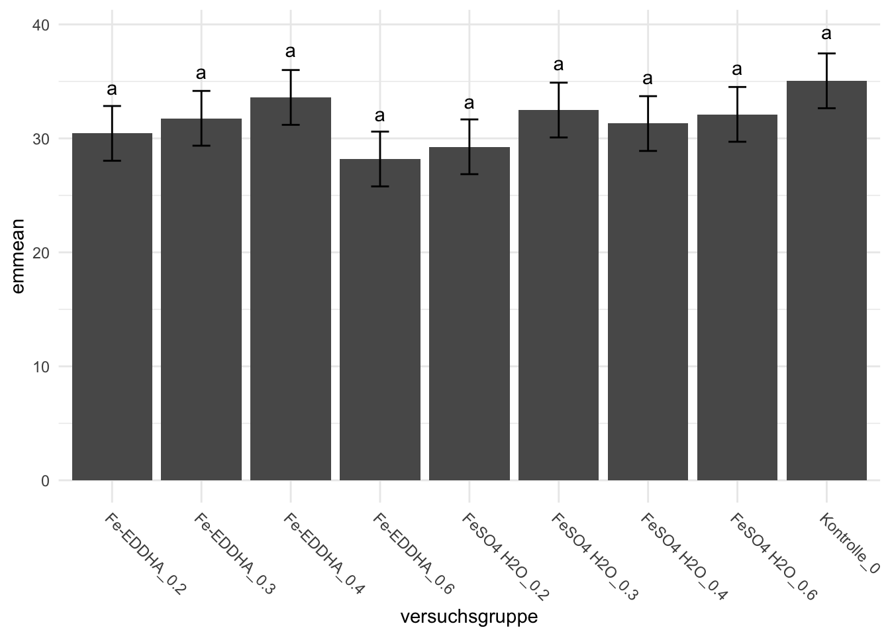
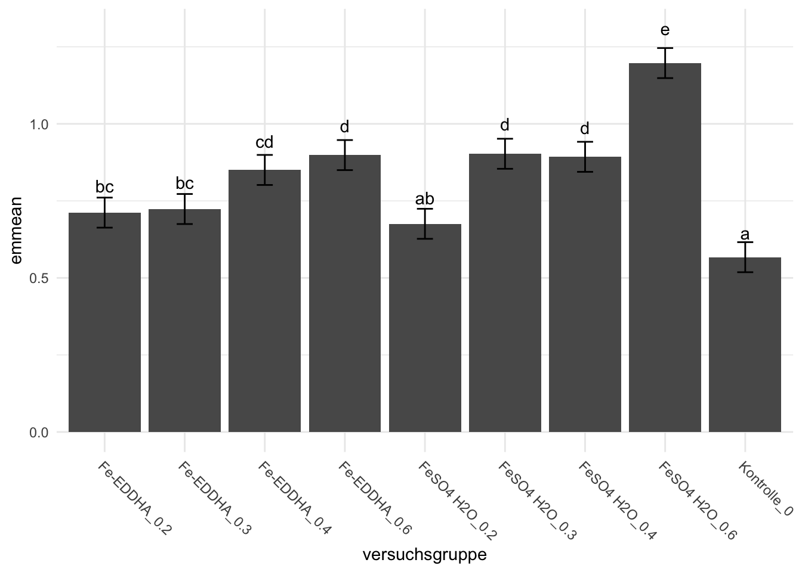
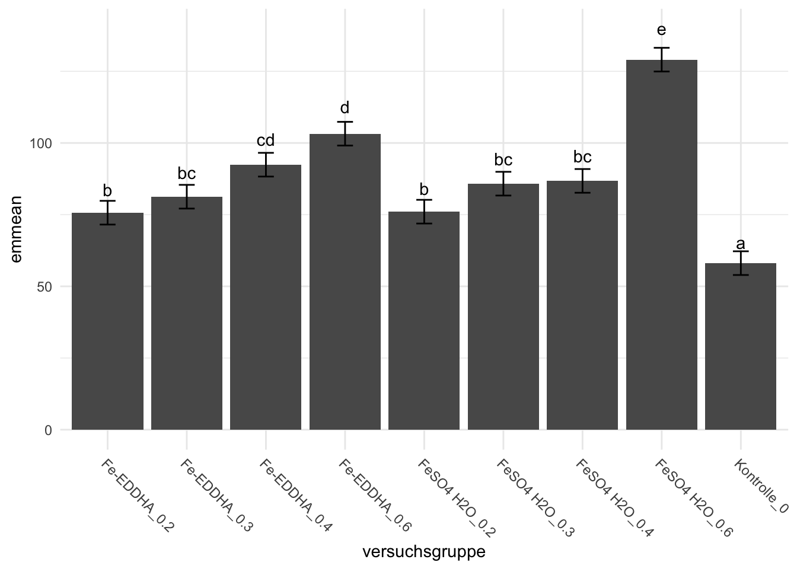

pacman::p_load(tidyverse, readxl, parameters,
effectsize, magrittr, multcomp,
multcompView, rcompanion, rstatix,
emmeans, see, performance, fs,
janitor, broom, scales, knitr,
conflicted)
## resolve some conflicts with same function naming
conflicts_prefer(dplyr::select)
conflicts_prefer(dplyr::filter)
conflicts_prefer(effectsize::eta_squared)
conflicts_prefer(magrittr::set_names)16 Eisen und Zink in Salat
Version vom July 11, 2023 um 14:20:29
Wir wollen folgende R Pakete in diesem Kapitel nutzen.
16.1 Daten einlesen
data_tbl <- read_csv2("data/fe_zn_salad.csv") %>%
clean_names() %>%
fill(eisendungeform) %>%
mutate(eisendungeform = str_replace_all(eisendungeform, "\u0096 7 ", ""),
versuchsgruppe = str_c(eisendungeform, "_", eisendungung)) %>%
pivot_longer(cols = zn_blanchiert:fe_ungewaschen,
names_to = "outcome",
values_to = "rsp")16.2 Daten auswerten
nested_tbl <- data_tbl %>%
select(versuchsgruppe, outcome, rsp) %>%
group_by(outcome) %>%
nest()
aov_res <- nested_tbl %>%
mutate(model = map(data, ~lm(rsp ~ versuchsgruppe, data = .x))) %>%
mutate(anova = map(model, anova)) %>%
mutate(parameter = map(anova, model_parameters)) %>%
select(outcome, parameter) %>%
unnest(parameter) %>%
clean_names() %>%
mutate(p = pvalue(p)) %>%
filter(parameter != "Residuals") %>%
select(outcome, parameter, p)
aov_res %>%
kable(align = "c", "pipe")| outcome | parameter | p |
|---|---|---|
| zn_blanchiert | versuchsgruppe | 0.538 |
| zn_ungewaschen | versuchsgruppe | 0.634 |
| fe_blanchiert | versuchsgruppe | <0.001 |
| fe_ungewaschen | versuchsgruppe | <0.001 |
emm_tbl <- nested_tbl %>%
mutate(model = map(data, ~lm(rsp ~ versuchsgruppe, data = .x))) %>%
mutate(emm = map(model, emmeans, ~versuchsgruppe)) %>%
mutate(contrast = map(emm, contrast, method = "pairwise",
adjust = "none")) %>%
mutate(cld = map(emm, cld, Letters = letters, adjust = "none"))
emm_tbl %>%
mutate(contrast = map(contrast, as_tibble)) %>%
unnest(contrast) %>%
select(outcome, contrast, p.value) %>%
mutate(p.value = pvalue(p.value)) %>%
print(n = 10)# A tibble: 144 × 3
# Groups: outcome [4]
outcome contrast p.value
<chr> <chr> <chr>
1 zn_blanchiert (Fe-EDDHA_0.2) - (Fe-EDDHA_0.3) 0.836
2 zn_blanchiert (Fe-EDDHA_0.2) - (Fe-EDDHA_0.4) 0.118
3 zn_blanchiert (Fe-EDDHA_0.2) - (Fe-EDDHA_0.6) 0.357
4 zn_blanchiert (Fe-EDDHA_0.2) - FeSO4 H2O_0.2 0.682
5 zn_blanchiert (Fe-EDDHA_0.2) - FeSO4 H2O_0.3 0.573
6 zn_blanchiert (Fe-EDDHA_0.2) - FeSO4 H2O_0.4 0.878
7 zn_blanchiert (Fe-EDDHA_0.2) - FeSO4 H2O_0.6 0.492
8 zn_blanchiert (Fe-EDDHA_0.2) - Kontrolle_0 0.168
9 zn_blanchiert (Fe-EDDHA_0.3) - (Fe-EDDHA_0.4) 0.171
10 zn_blanchiert (Fe-EDDHA_0.3) - (Fe-EDDHA_0.6) 0.474
# ℹ 134 more rowsemm_tbl %>%
mutate(cld = map(cld, arrange, versuchsgruppe)) %>%
unnest(cld) %>%
select(outcome, versuchsgruppe, .group) %>%
print(n = Inf)# A tibble: 36 × 3
# Groups: outcome [4]
outcome versuchsgruppe .group
<chr> <fct> <chr>
1 zn_blanchiert Fe-EDDHA_0.2 " a"
2 zn_blanchiert Fe-EDDHA_0.3 " a"
3 zn_blanchiert Fe-EDDHA_0.4 " a"
4 zn_blanchiert Fe-EDDHA_0.6 " a"
5 zn_blanchiert FeSO4 H2O_0.2 " a"
6 zn_blanchiert FeSO4 H2O_0.3 " a"
7 zn_blanchiert FeSO4 H2O_0.4 " a"
8 zn_blanchiert FeSO4 H2O_0.6 " a"
9 zn_blanchiert Kontrolle_0 " a"
10 zn_ungewaschen Fe-EDDHA_0.2 " a"
11 zn_ungewaschen Fe-EDDHA_0.3 " a"
12 zn_ungewaschen Fe-EDDHA_0.4 " a"
13 zn_ungewaschen Fe-EDDHA_0.6 " a"
14 zn_ungewaschen FeSO4 H2O_0.2 " a"
15 zn_ungewaschen FeSO4 H2O_0.3 " a"
16 zn_ungewaschen FeSO4 H2O_0.4 " a"
17 zn_ungewaschen FeSO4 H2O_0.6 " a"
18 zn_ungewaschen Kontrolle_0 " a"
19 fe_blanchiert Fe-EDDHA_0.2 " bc "
20 fe_blanchiert Fe-EDDHA_0.3 " bc "
21 fe_blanchiert Fe-EDDHA_0.4 " cd "
22 fe_blanchiert Fe-EDDHA_0.6 " d "
23 fe_blanchiert FeSO4 H2O_0.2 " ab "
24 fe_blanchiert FeSO4 H2O_0.3 " d "
25 fe_blanchiert FeSO4 H2O_0.4 " d "
26 fe_blanchiert FeSO4 H2O_0.6 " e"
27 fe_blanchiert Kontrolle_0 " a "
28 fe_ungewaschen Fe-EDDHA_0.2 " b "
29 fe_ungewaschen Fe-EDDHA_0.3 " bc "
30 fe_ungewaschen Fe-EDDHA_0.4 " cd "
31 fe_ungewaschen Fe-EDDHA_0.6 " d "
32 fe_ungewaschen FeSO4 H2O_0.2 " b "
33 fe_ungewaschen FeSO4 H2O_0.3 " bc "
34 fe_ungewaschen FeSO4 H2O_0.4 " bc "
35 fe_ungewaschen FeSO4 H2O_0.6 " e"
36 fe_ungewaschen Kontrolle_0 " a "gg_func <- function(data){
data %>%
mutate(.group = str_replace_all(.group, "\\s", "")) %>%
ggplot(aes(versuchsgruppe, emmean)) +
theme_minimal() +
geom_bar(stat = "identity") +
geom_errorbar(aes(ymin = emmean - SE, ymax = emmean + SE), width = 0.2) +
geom_text(aes(label = .group, y = (emmean + SE) + (0.05 * (emmean + SE)))) +
theme(axis.text.x = element_text(angle = -45, hjust = 0))
}
foo <- emm_tbl %>%
mutate(gg = map(cld, gg_func))
foo$gg[[1]]
[[2]]
[[3]]
[[4]]